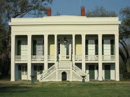
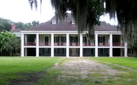
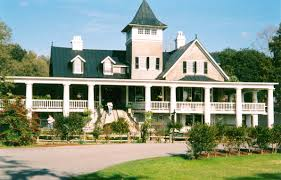

Felicity Plantation is a historic sugarcane plantation on the banks of the Mississippi River in the U.S. state of Louisiana. It is located along Louisiana Highway 18 in Vacherie, St. James Parish. Felicity is a sister plantation to St, Joseph Planation and was built around 1846 (or 1850) by Valcour Aime as a wedding gift to his daughter, Felicite Emma, and her spouse, Septime Fortier, who was also her cousin. Acquired by a bank in 1873, the plantation was purchased by Saturnine Waguespack in 1890, who merged it with the St. Joseph Plantation to form the St. Joseph Plantation and Manufacturing Company. The house still remains in the Waguespack family.
Bocage

Bocage Plantation is a historic plantation in Darrow, Ascension Parish, Louisiana, about 25 miles southeast of Baton Rouge. The plantation house was constructed in 1837 in Greek Revival style with Creole influences, especially in the floorplan. Established in 1801, the plantation was added to the National Register of Historic Places on June 20, 1991.
Destrehan

Destrehan Plantation (French: Plantation Destrehan) is an antebellum mansion, in the French Colonial style, modified with Greek Revival architectural elements. It is located in southeast Louisiana, near the town of the same name, Destrehan. During the 19th century, the plantation was a major producer of indigo and then sugarcane.
The home is most commonly associated with its second owner, Jean-Noël Destréhan, who served briefly as the first United States Senator from Louisiana in 1812. He was influential in the transition of the Orleans Territory to statehood. The house is a unique example of a plantation home outliving the oil refinery that had been built around it. It is listed on the National Register of Historic Places for its architectural quality and association with important people and events in Louisiana history.
Magnolia

Founded in 1676 by the Drayton family. Magnolia Plantation is located near Charleston and directly across the Ashley River from North Charleston.
Magnolia Plantation has survived the centuries and witnessed the history of our nation unfold before it from the American Revolution through the Civil War and beyond. Magnolia was originally a rice plantation, with extensive earthworks of dams and dikes built in fields along the river for irrigating land for rice cultivation. African slaves from rice-growing regions created the works. As time went on, these slaves developed a creolized Gullah language and vibrant culture, strongly influenced by their West African cultures. They have retained many combined cultural elements from West Africa to this day in what is known as the Gullah Heritage Corridor of the Lowcountry and Sea Islands of the Carolinas and Georgia.
It is the oldest public tourist site in the Lowcountry, and the oldest public gardens in America, opening its doors to visitors in 1870 to view the thousands of beautiful flowers and plants in its famous gardens